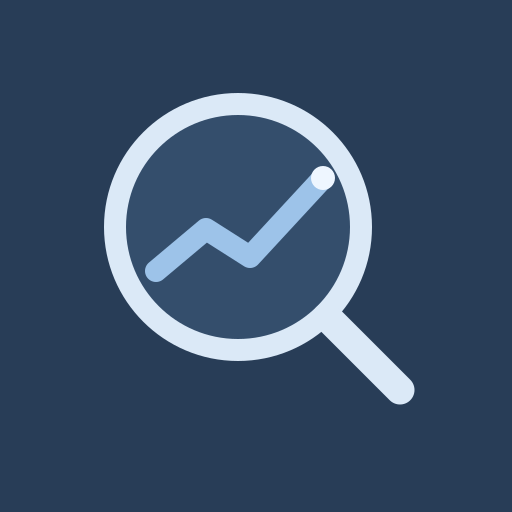
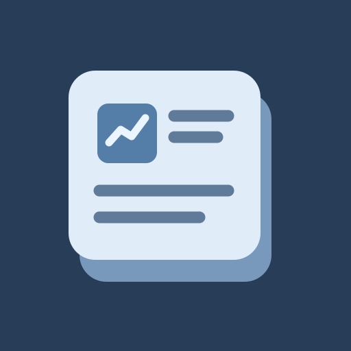
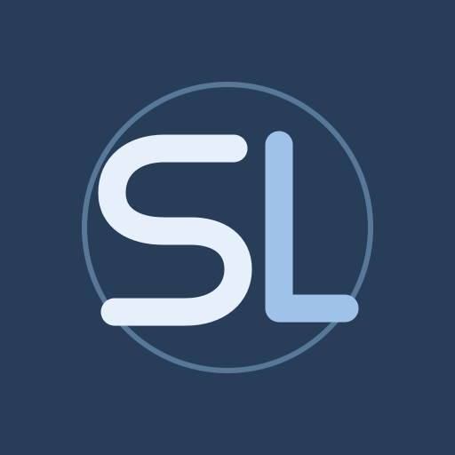
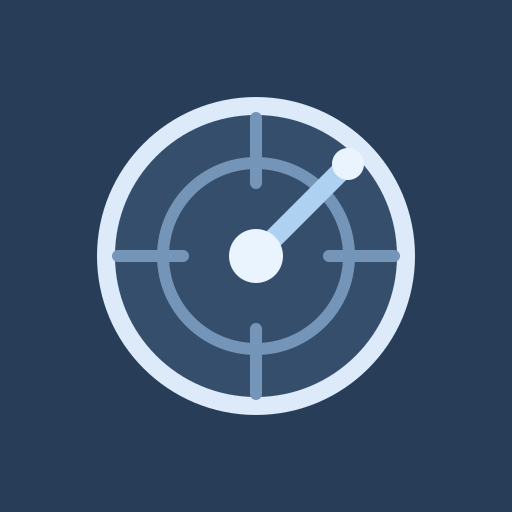
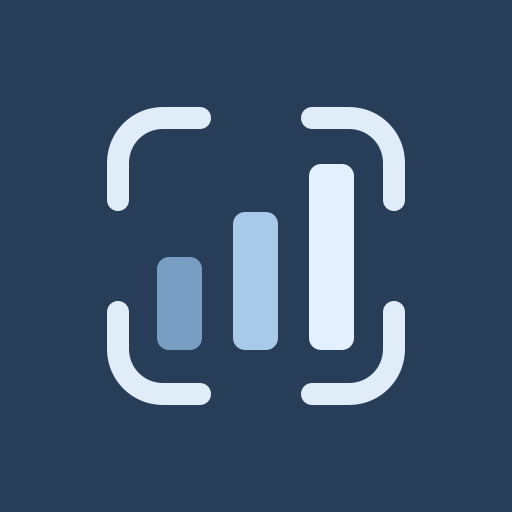

01 · Lens + trend
เลนส์ค้นข้อมูลพร้อมเส้นแนวโน้ม
ขนาดเมนู
โทนน้ำเงินหม่นของแอป · ดูทั้งขนาดใหญ่และขนาดไอคอนมือถือ

เลนส์ค้นข้อมูลพร้อมเส้นแนวโน้ม

หัวข้อข่าวหลายแหล่งรวมอยู่ในบัตรเดียว

อักษรย่อแบรนด์ · แบบที่ใช้ในแอปตอนนี้

สื่อถึงการเฝ้าดูข่าวและหุ้นที่เลือกไว้

กรอบโฟกัสกับแท่งข้อมูลหุ้นที่ชัดเจน